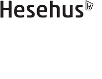
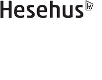
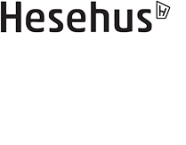

Denne styleguide er udarbejdet i forbindelse med Projekt 5 for UCL, Hesehus og Matas.
Dette værktøj kan hjælpe dig med at få sikret, at Matas's designelementer, herunder deres udvalgte UI Patterns der er på hjemmesiden, farver, knapper typografi m.m. forbliver det samme.
Den er med til at skabe en forståelse mellem udviklerne af websitet. Desuden giver den også mulighed for, hurtigt at genbruge de valgte elementer fra andre steder på et website, man kan altså spare tid og skabe overblik, samtidig med, at man overholder designets retningslinjer ved, at benytte sig af denne styleguide.
Styleguiden er designet og konstrueret af gruppe 10 - André, Mark, Martin og Frederik.

Farver
#000000
#002643
#6B3B45
#C94C36
#53811E
#E85A61
#73B4C7
#F49D75
#E9B1AC
#F3F1EF
#F6F6F6
#FFFFFF
Dette er Century Gothic - Matas' foretrukne typografi
Centry Gothic er den primære brand typografi for Matas. Det er en meget elegant Sans Serif med et moderne touch. Denne overskrift viser pålidelighed, optimisme og oprigtighed. Den lette font vægt sætter en redaktionel tone, mens usædvanlige afrundede hjørner tilfører skrifttypen en karakteristisk personlighed af et moderne touch.
 
